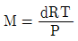
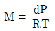
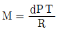
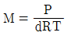
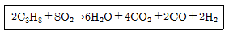
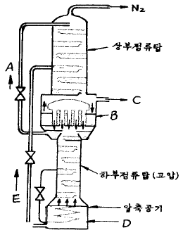
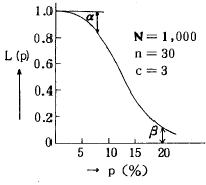
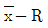

가스기능장 (2003-03-30 기출문제)
1과목: 임의 구분
1. 실제기체에 대한 다음 설명중 맞지 않는 것은?
- 분자간의 인력이 상당히 있으며 분자 부피가 존재한다.
- 완전 탄성체이다.
- 압축인자가 압력이나 온도에 따라 변한다.
- 압력이 낮고, 온도가 높으면 이상기체에 가까워 진다
(정답률: 86%)

2. 진공도가 57cmHg 값을 절대압력 kg/cm2로 환산하면?
- 0.258kg/cm2abs
- 0.516kg/cm2abs
- 1.033kg/cm2abs
- 2.066kg/cm2abs
(정답률: 67%)
3. 이상기체의 분자량을 구하는 식으로 옳은 것은? (단, M은 기체의 분자량, W는 기체의 무게, P와 R는 기체의 압력과 상수이며, d는 기체의 밀도이다.)




(정답률: 77%)
4. 15℃, 1기압의 기체가 있다. 압력을 변화시키지 않고 가열하면 303℃ 에서는 체적이 몇 배가 되는가?
- 1.0
- 2.0
- 3.0
- 4.0
(정답률: 61%)
5. 모리엘 선도에 대한 설명으로 맞지 않는 것은?
- 습포화 증기상태에서 등온선은 엔탈피선과 직교한다.
- 과냉각 상태에서 등온선과 등엔탈피선이 겹쳐진다.
- 과열증기 상태에서 등온선은 거의 엔트로피선을 따라 내려온다.
- 표준냉동 싸이클의 흡입가스 상태는 건조도 1의포화 증기이다.
(정답률: 53%)
6. 용접시 가접을 하는 이유로 가장 적당한 것은?
- 용접부의 강도를 크게 하기 위하여
- 응력 집중을 크게 하기 위하여
- 용접 자세를 일정하게 하기 위하여
- 용접 중의 변형을 방지 하기 위하여
(정답률: 93%)
7. 밀폐된 용기내에 1atm, 27℃로 프로판과 산소가 2:8의 비율로 혼합되어 있으며, 그것이 연소하여 아래와 같은 반응을 발생하고 화염온도는 3000K가 되었다고 한다. 이 용기내에 발생하는 압력은 얼마인가?

- 2atm
- 6atm
- 12atm
- 14atm
(정답률: 62%)
8. 프로판:4%(부피%), 메탄:16%(부피%), 공기:80%(부피%)의 조성을 가진 혼합기체의 폭발하한 값은 얼마인가? (단, 프로판과 메탄의 폭발하한값은 각각 2.2, 5.0% V/V 이다.)
- 9.93% V/V
- 7.20% V/V
- 5.42% V/V
- 3.99% V/V
(정답률: 68%)
9. 고압가스법에서 정의하는 가연성 가스 범주에 해당되지 않는 것은?
- 폭발 한계의 하한값이 20% 인 것
- 폭발 한계의 하한이 10% 인 것
- 폭발 한계의 상한과 하한의 차가 25% 인 것
- 폭발 한계의 하한이 8% 인 것
(정답률: 61%)
10. 가스는 최초의 완만한 연소에서 격렬한 폭굉으로 발전될때 까지의 거리가 짧은 가연성 가스일수록 위험하다. 이유도거리가 짧아질 수 있는 조건이 아 닌 것은?
- 압력이 높을수록
- 점화원의 에너지가 강할수록
- 관속에 방해물이 있을때
- 정상 연소속도가 낮을수록
(정답률: 89%)
11. 가스의 검출(檢出)에 관한 설명중 틀 린 것은?
- 산소를 미량 포함하는 가스를 황린속에 통하면 백색의 연기를 낸다.
- 염소의 누설검출에 암모니아수를 사용한다.
- 암모니아를 황산에 통하면 적색연기를 낸다.
- 이산화탄소를 석회수에 통하면 흰색침전물을 만든다.
(정답률: 67%)
12. 비중이 0.5인 액체의 액주 높이가 6m 일 때 압력으로 환산하면 몇 kg/cm2 이 되는가?
- 0.3 kg/cm2
- 0.6 kg/cm2
- 0.9 kg/cm2
- 1.2 kg/cm2
(정답률: 53%)
13. 부탄과 프로판의 분리방법을 가장 잘 설명한 것은?
- 증류수로 세정하여 침전물을 분리한다.
- 압력을 가하여 액화시키면 두 층으로 분리된다.
- 압력을 가하여 액화시킨 후 증류법으로 분리한다.
- 대량이 물로 세정하면 부탄은 물에 용해되고 프로판만 남는다.
(정답률: 79%)
14. 다음 성분들 중에서 금속에 대한 부식성은 거의 없으나, 대기권의 오존층을 파괴하여 세계환경보호협회에서 사용을 규제하고 있는 물질은?
- 헬륨
- 프레온(freon)
- L.P.G
- 알곤
(정답률: 93%)
15. 에틸렌의 제법중 현재 공업적으로 가장 많이 사용되고 있는 것은?
- 포화탄화수소의 개질
- 에탄올의 진한황산에 의한 분해
- 중질유의 수소 첨가 분해
- 나프타의 열 분해
(정답률: 84%)
16. 비등점이 - 183℃ 되는 액체산소 용기나 저온용 금속재료로서 다음중 적당치 않은 것은?
- 탄소강
- 9% 니켈강
- 스테인레스강(18-8)
- 황동
(정답률: 85%)
17. 가스배관의 접속법중 용접접합의 특징이 아 닌 것은?
- 보온시공이 용이하다.
- 용접부의 강도가 크다.
- 돌기부가 있으므로 배관상의 공간효율이 나쁘다.
- 접속부분의 불균일한 부분이 없으며 마찰저항이 적다
(정답률: 85%)
18. 공기 액화분리장치의 폭발 원인으로 적당하지 못한 것은?
- 액체 공기 중의 오존(O3)흡입
- 공기 취입구에서 사염화탄소(CCl4)의 흡입
- 압축기용 윤활유의 분해에 의한 탄화수소의 생성
- 공기 중에 있는 산화질소(NO),과산화질소 (NO2)등의 질화 화합물의 흡입
(정답률: 74%)
19. 가스배관설비에 있어 옥내배관은 주로 강관이 사용된다. 강관 접합으로 가장 많이 사용되는 것은?
- 기계적접합
- 용융접합
- 나사접합
- 소켓접합
(정답률: 81%)
20. 신축이음(Expansion joint)을 하는 주된 목적은?
- 진동을 적게하기 위하여
- 팽창과 수축에 따른 관의 정상적인 운동을 허용하기 위하여
- 관의 제거를 쉽게 하기 위하여
- 펌프나 압축기의 운동에 대한 보상을 하기 위하여
(정답률: 94%)
2과목: 임의 구분
21. 다음중 유체의 누출을 방지하고 기밀을 유지할때 사용하는 나사는?
- 정밀나사
- 너클나사
- 관용테이퍼나사
- 가는나사
(정답률: 71%)
22. 열기관에서 1사이클당 효율을 높이는 방법으로 좋은 것은?
- 급열 온도를 낮게 한다.
- 동작 유체의 양을 증가 시킨다.
- 카르노 사이클에 가깝게 한다.
- 동작 유체의 양을 감소 시킨다.
(정답률: 87%)
23. 고압가스 장치에 사용되는 압력계에서 탄성변형식 압력계가 아 닌 것은?
- 링밸런스식 압력계
- 브르돈관식압력계
- 벨로우즈압력계
- 다이어프램식 압력계
(정답률: 75%)
24. 고압가스 초저온 용기의 단열 성능시험은 용기마다 실시하여 침입열량이 얼마 이하의 경우를 합격으로 하는가? (단, 내용적 1천 L 미만)
- 0.00⑤ kcal/h.℃.L
- 0.0006 kcal/h.℃.L
- 0.0008 kcal/h.℃.L
- 0.0009 kcal/h.℃.L
(정답률: 77%)
25. 탄소강에 있어서 퍼얼라이트(pearlite) 조직을 가진 재료의 브리넬경도(HB)로서 옳은 값은?
- 80
- 200
- 800
- 920
(정답률: 75%)
26. 가스 저장탱크를 지하에 2개 이상 인접하여 설치하고자한다. 상호간에 최소 몇 m 이상 거리를 유지해야 하는가?
- 0.5m
- 1m
- 2m
- 3m
(정답률: 70%)
27. 다음중 아세틸렌 가스의 용해도가 가장 큰 용매는? (단, 25℃ 1 atm 조건)
- 아세톤
- 벤젠
- 이황화탄소(CS2)
- 사염화탄소(CCl4)
(정답률: 88%)
28. 독성가스와 가연성가스로 짝지어진 것은?
- NH3와 HCl
- Cl2와 C2H2
- Cl2와 H2SO4
- H2와 CO2
(정답률: 64%)
29. 암모니아 냉매의 누출식별 방법이 아닌 것은?
- 비눗물로 검사한다.
- 암모니아 냄새로 누출을 발견한다.
- 리트머스시험지를 새는 장소에 대면 청색이 된다.
- 네슬러용액을 시료에 떨어뜨리면 암모니아량이 적을때 황색, 많을 때 다갈색이 된다.
(정답률: 65%)
30. 가스의 비열에 관한 설명이다. 틀린 것은?
- 정압비열 Cp는 일정압력 조건에서 측정한다.
- 정압비열 Cv는 일정체적압력 조건에서 측정한다.
- Cp/Cv를 비열비라고 한다.
- 정압비열 Cp는 정적비열 Cv보다 항상 적다.
(정답률: 88%)
31. 인장응력이 10㎏/mm2인 연강봉이 3140㎏의 하중을 받아늘어났다면 이 봉의 지름은 몇㎜인가?
- 10
- 20
- 25
- 30
(정답률: 54%)
32. 다음 중 프로판 가스에 대한 성질이 아닌 것은?
- 완전연소에 필요한 이론 공기량은 프로판 1몰에 대해 산소 5몰이 필요하다.
- 1[㎏]의 발열량은 약 12000[㎉] 이다.
- 1[m3]의 발열량은 약 12000[㎉] 이다.
- 연소 속도가 늦다.
(정답률: 69%)
33. 암모니아를 사용하여 질산제조의 원료를 얻는 반응식으로 가장 옳은 것은?
- 2NH3 + CO → (NH3)2CO + H2O
- 2NH3 + HNO3 → NH4NO3
- 2NH3 + H2SO4 → (NH4)2SO4
- 4NH3 + 5O2→ 4NO + 6H2O
(정답률: 80%)
34. 다음 그림은 공기의 분리장치로 쓰이고 있는 복식정류탑의 구조도이다. 흐름A의 액의 성분과 장치B의 명칭이 바르게 표기된 것은?

- A: O2가 풍부한액, B: 증류관
- A: N2 가 풍부한액, B: 응축기
- A: O2 가 풍부한액, B: 응축기
- A: N2 가 풍부한액, B: 증류관
(정답률: 80%)
35. 고압가스 용기제조의 기술기준에 있어서 재료로서 가장 옳은 것은? (단, 이음매없는 용기는 제외)
- 스테인레스강, 알루미늄합금, 탄소, 인 및 황의 함유량이 각각 0.33%, 0.04% 및 0.⑤% 이하의 강 등을 사용한다.
- 스테인레스강, 알루미늄합금, 탄소, 인 및 황의 함유량이 각각 0.35% 이상을 사용한다.
- 스테인레스강, 알루미늄합금, 탄소, 인 및 황의 함유량이 각각 3.3% 이상, 0.04% 이상 및 0.⑤% 이상의 강등을 사용한다.
- 스테인레스강, 알루미늄합금, 탄소, 인 및 황의 함유량이 각각 0.33%, 0.04% 및 5% 이하의 강등을 사용한다.
(정답률: 89%)
36. 어떤 통속에 원자량이 35.5의 액체 염소 25㎏이 들어있다이 염소를 표준상태인 바깥으로 내 놓으면 몇 m3의 부피를 차지하는가?
- 22.4
- 15.4
- 11.0
- 7.9
(정답률: 46%)
37. 산소미터에서 산소 흡수제로 사용되는 용액은?
- 암모니아성 가성소다 용액
- 하이드로설파이드의 가성소다 용액
- 수산화 칼륨의 진한 용액
- 개미산 구리의 암모니아성 용액
(정답률: 57%)
38. 고압가스관계법에 규정한 공급자의 의무사항으로서 적당한 것은?
- 안전점검을 실시한 결과 수요자의 시설중 개선 할 사항이 있을 경우 그 수요자로 하여금 당해 시설을 개선하도록 한다.
- 고압가스 수요자의 사용시설 중 개선명령을 할 수 있는 자는 시,도지사이다.
- 고압가스를 수요자에게 공급할 때는 수요자에게 그 사용시설을 안전점검하도록 한다.
- 고압가스 판매자는 고압가스의 수요자가 그 시설을 개선하지 아니할 때는 고압가스의 공급을 중단하고, 그 사실을 도지사에게 신고한다.
(정답률: 84%)
39. 저장탱크의 설치방법을 올바르게 설명한 것은?
- 두 저장탱크의 최대직경이 각각 4m,6m 일 때 1.5m를 유지한다.
- 두 저장탱크의 최대직경이 각각 0.5m,1.5m일 때 0.5m를 이격한다.
- 저장탱크를 지하에 묻는 경우 지면과 정상부 까지의 깊이는 60㎝ 이상으로 한다.
- 합산저장능력이 1000톤이하인 독성가스저장탱크 주위에는 방류둑을 설치하지 않아도 된다.
(정답률: 57%)
40. 용기 제조허가 대상에서 제외되는 용기는?
- 내용적 3㎗
- 내용적4㎗
- 내용적 5㎗
- 내용적 6㎗
(정답률: 88%)
3과목: 임의 구분
41. 다음중 액화석유가스 충전사업을 가장 잘 정의한 항은?
- 액화가스를 일반수요자에 배관을 통하여 공급 하는 사업
- 저장시설에 저장된 액화석유가스 용기에 충전 하여 공급하는 사업
- 액화가스를 사업용으로 공급하는 사업
- 모든가스를 수요자에게 공급하는 사업 및 연료 가스를 사용하기 위한 기기를 제조하는 사업
(정답률: 91%)
42. 긴급차단 장치에 관한 설명으로 옳지 않은 것은?
- 고압가스 설비에는 설비마다 설치
- 방출가스의 종류에 따라 설치
- 특수 반응설비마다 설치
- 고압가스설비, 특수반응설비에 설치
(정답률: 71%)
43. 공급자의 안전점검 기준이 아닌 것은?
- 가스계량기 출구에서의 마감조치 여부
- 연소기마다 퓨즈콕등 안전장치여부
- 연소기의 입구압력을 측정하고 그 이상 유무
- 배기통의 막힘여부
(정답률: 73%)
44. 고압가스 충전용기에 관한 사항 중 잘못 된 것은?
- 용기는 항상 40℃ 이하의 온도로 유지하도록 할 것
- 정전시에 대비하여 휴대용 손전등, 라이터, 성냥등을 가까운 곳에 비치할 것
- 충전용기와 빈 용기는 각각 구분하여 용기 보관장소에 놓을 것
- 용기 보관장소에는 불필요한 물건을 함께 보관하지 말 것
(정답률: 91%)
45. 압력조정기의 제조기술 기준중 옳지 않은 것은?
- 사용상태에서 충격에 견디고 빗물이 들어가지 아니하는 구조일 것
- 용량 10㎏/h이상의 1단 감압식 저압조정기는 출구 압력을 변동시킬 수 없는 구조일 것
- 몸통과 덮개를 몽키렌치, 드라이버등 일반공구로 분리할 수 없는 구조일 것
- 자동절체식 조정기는 가스공급 방향을 알 수 있는 표시기를 구비할 것
(정답률: 56%)
46. 차량에 부착된 탱크 내용적이 1800L이다. 이 용기에 액화부틸렌을 완전히 충전하였다. 이 때 액화부틸렌의 질량(㎏)은? (단, 가스정수=2.00 )
- 780
- 900
- 766
- 878
(정답률: 84%)
47. 내용적이 47L인 프로판 용기안에 프로판이 20㎏ 충전되어있을 때 프로판의 가스상수는?
- 0.86
- 1.25
- 2.09
- 2.35
(정답률: 71%)
48. 다음 도시가스의 연소폐가스 성분이 아닌 것은?
- 공기 중의 질소와 과잉산소
- 메탄가스와 수증기
- 가스중의 불연성 성분
- 메탄과 수소
(정답률: 66%)
49. 압축계수 Z는 이상기체 법칙 PV=ZnRT 로 놓아서 정의된 계수이다. 다음 중 맞는 것은?
- 이상기체의 경우 Z=1 이다.
- Z는 실제기체의 경우 1 이다.
- Z는 그 단위가 R의 역수이다.
- 일반화시킨 환산변수로는 정의할 수 없으며 이상기체의 경우 Z=O 이다.
(정답률: 74%)
50. 다음 중 가연성 이면서 독성이 있는 가스는?
- NH3
- CO2
- N2
- CH3Cl
(정답률: 69%)
51. 배관을 지하에 매설하는 경우 기준에 적합하지 않 은 것은?
- 배관은 그 외면으로 부터 수평거리로 건축물(지하가 및 터널 포함)까지 2m 이상을 유지할 것
- 배관은 그 외면으로 부터 다른 시설물과 0.3m 이상의 거리를 유지할 것
- 배관은 지반의 동결에 따라 손상을 받지 않도록 적절한 깊이로 매설할 것
- 배관입상부,지반급변부 등 지지조건이 급변하는 장소에는 곡관의 삽입,지반개량등 필요한 조치를 할 것
(정답률: 66%)
52. 아세틸렌을 용기에 충전하는 때의 충전중의 압력은 ( ①)이하로 하고, 충전후에는 압력이 15℃에서 ( ② )이하로 될때까지 정치해야한다. ( )안에 알맞은 숫자는? (순서대로 ①, ②)
- 1.5Mpa, 2.5Mpa
- 4.6Mpa, 1.5Mpa
- 2.5Mpa, 1.5Mpa
- 4.5Mpa, 2.5Mpa
(정답률: 88%)
53. 지상 5m 이상의 높이 저장탱크에 반드시 설치해야 하는 설비는?
- 가스홀더
- 역류방지밸브
- 가스방출관
- 드레인세퍼레이터
(정답률: 78%)
54. 다음 중 고압가스특정제조허가의 대상에 속하지 않는 것은?
- 석유정제업자의 석유정제시설에서 고압가스를 제조하는 것으로서 저장능력이 100ton 이상인 것
- 석유화학공업자의 석유화학공업시설에서 고압가스를 제조하는 것으로서 처리능력이 1만m3 이상인 것
- 철강공업자의 철강공업시설에서 고압가스를 제조하는 것으로서 그 처리능력이 10만m3 이상인 것
- 비료생산업자의 비료제조시설에서 고압가스를제조하는 것으로서 그 처리능력이 1만m3이상인 것
(정답률: 72%)
55. 그림의 OC곡선을 보고 가장 올바른 내용을 나타낸 것은?

- α : 소비자 위험
- L(p) : 로트의 합격확률
- β : 생산자 위험
- 불량율 : 0.03
(정답률: 80%)
56. 품질관리 활동의 초기단계에서 가장 큰 비율로 들어가는 코스트는?
- 평가코스트
- 실패코스트
- 예방코스트
- 검사코스트
(정답률: 89%)
57. PERT/CPM에서 Network 작도시 점선화살표는 무엇을 나타내는가?
- 단계(event)
- 명목상의 활동(dummy activity)
- 병행활동(paralleled activity)
- 최초단계(initial event)
(정답률: 80%)
58. 신제품에 가장 적합한 수요예측 방법은?
- 시계열분석
- 의견분석
- 최소자승법
- 지수평활법
(정답률: 59%)
59. 관리도에 대한 설명 내용으로 가장 관계가 먼 것은?
- 관리도는 공정의 관리만이 아니라 공정의 해석에도 이용된다.
- 관리도는 과거의 데이터의 해석에도 이용된다.
- 관리도는 표준화가 불가능한 공정에는 사용할 수 없다.
- 계량치인 경우에는

관리도가 일반적으로 이용된다.
(정답률: 74%)
60. 다음은 워크 샘플링에 대한 설명이다. 틀린 것은?
- 관측대상의 작업을 모집단으로 하고 임의의 시점에서 작업내용을 샘플로 한다.
- 업무나 활동의 비율을 알 수 있다.
- 기초이론은 확률이다.
- 한 사람의 관측자가 1인 또는 1대의 기계만을 측정한다.
(정답률: 74%)